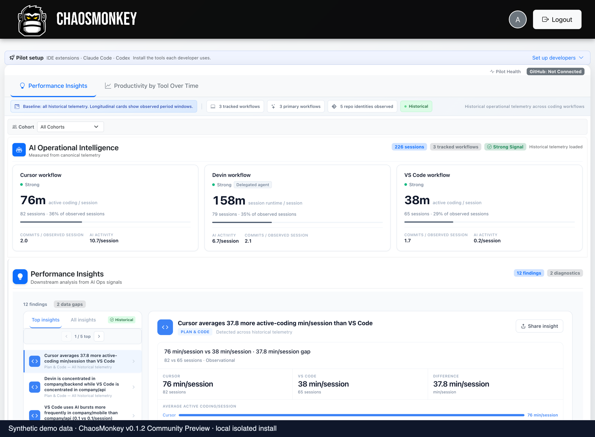
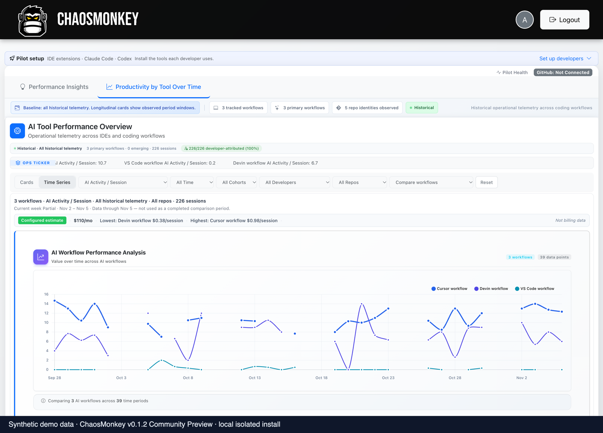
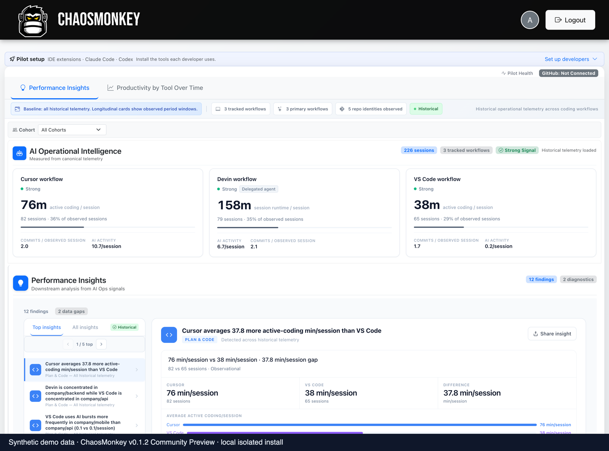
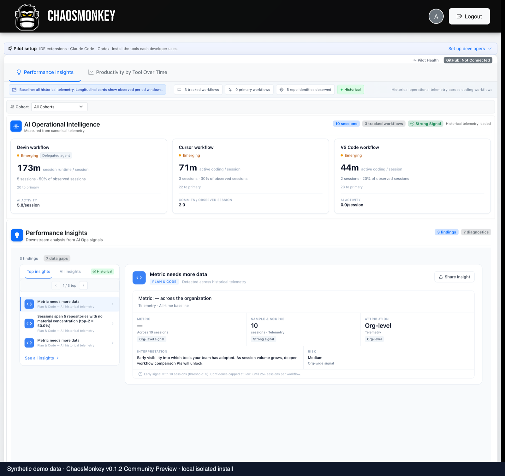
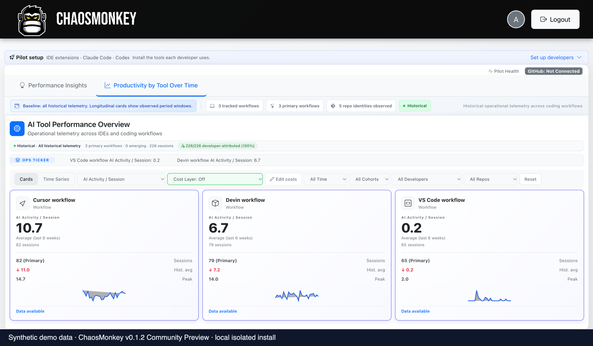
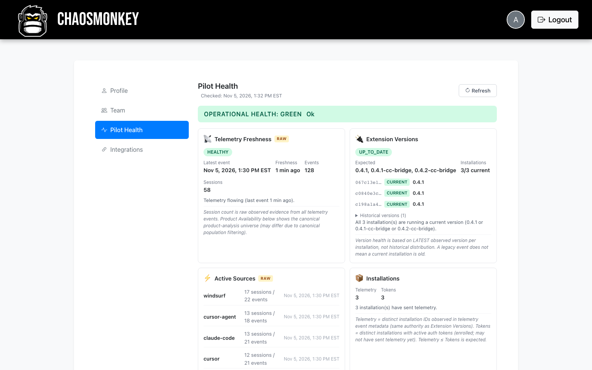
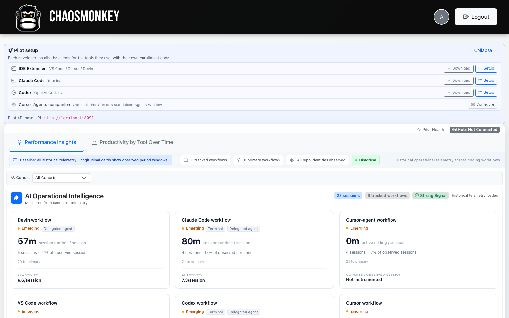

Connect AI coding activity to engineering outcomes.
ChaosMonkey gives engineering teams visibility into how AI coding tools are used, how workflows evolve, and how that activity relates to software delivery.
# Run the all-in-one container (nginx + Laravel + SQLite on /data) docker run -d --name chaosmonkey \ -p 127.0.0.1:8080:80 \ -v chaosmonkey-data:/data \ ghcr.io/chaosmonkey-dev/chaosmonkey:0.1.2 # Create your administrator account, then open http://localhost:8080 docker exec -it chaosmonkey \ php /var/www/backend/artisan chaosmonkey:create-admin you@example.com
Telemetry in. Sessions and signals out.
ChaosMonkey ingests aggregate activity from supported AI coding clients, normalizes it into canonical sessions, and gives you per-tool analytics on your own infrastructure.
Collect
Lightweight clients for VS Code and Cursor IDEs, Claude Code, Codex CLI, and the Cursor Agents Window send aggregate activity — counts and durations, not source code.
Analyze
Activity is normalized into canonical sessions with per-tool attribution: workflow breakdowns, productivity-by-tool, and configured spend estimates.
Correlate Optional
Connect GitHub (OAuth or App) to correlate sessions with pull requests, reviews, and deployments. Correlation is not causation — the evidence is presented, not verdicts.
What you get on a real install.
Screenshots from a running self-hosted container. All data shown is synthetic demo telemetry — no customer data is pictured.






Clients for the tools your team already runs.
Purpose-built clients ship as packaged artifacts served by your own backend — installs always get the version matching your server.
- IDE extension — VS Code / Cursor (VSIX), with Devin support
- Claude Code bridge — terminal agent telemetry
- Codex bridge — OpenAI Codex CLI
- Cursor Agents companion — for Cursor's standalone Agents Window

From coding sessions to delivery.
Session telemetry works standalone. When you connect GitHub — via OAuth or a GitHub App you control — ChaosMonkey correlates sessions with pull requests, reviews, and deployments.
- Delivery evidence is org- and repo-level unless an authoritative join exists
- Correlation is not proof of causation — evidence is labeled by source
- Identity-only logins produce zero engineering evidence
What correlation adds
Repositories, pull requests, commits, deployments, and releases join the evidence base. Performance Insights then weighs delivery context alongside telemetry — and still only surfaces findings the observed data supports.
Spend shown in the product is a configured estimate per tool, not provider billing. Setup in docs/integrations.md.
Self-hosted by default.
One container — nginx, PHP-FPM, Laravel, SQLite. Application data lives in a single Docker volume on your host; it only leaves your infrastructure when you configure an integration (like GitHub) that sends it.
One volume
SQLite, configuration, and the app key persist under /data — upgrades replace the container, not your data.
Aggregate by design
Clients send event counts, durations, and session metadata — engineered to avoid source code and file contents. See PRIVACY.md.
You hold the keys
Each install is its own authority. Optional GitHub integration runs against an OAuth app or GitHub App you own.
Prefer a managed instance?
We also run hosted ChaosMonkey instances for organizations that would rather not operate their own — same product, managed for you. Contact us.
Contributing
ChaosMonkey is a Community Preview — issues, discussions, and contributions are welcome. Start with CONTRIBUTING.md or join Discussions.
Yes, we know about the other Chaos Monkey.
The original Chaos Monkey made infrastructure failures visible by deliberately creating them. Ours is concerned with a different kind of chaos: what happens when AI coding tools enter the software development lifecycle.
Different monkeys. Different chaos.
ChaosMonkey is an independent project — not affiliated with, endorsed by, or connected to Netflix.
Run it yourself. See what your AI tools are doing.
v0.1.2 is available now — pull the image, create an admin, enroll your team. No sales call required.